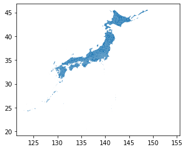
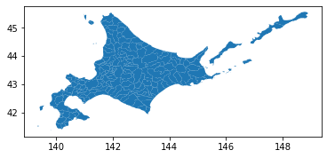
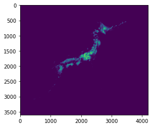
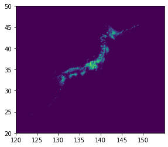
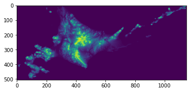
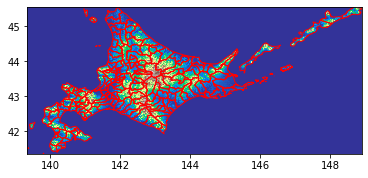

Shapefileとgeotiffファイルを読み込む¶
shapefile¶
shapefileの読み込み¶
ベクタデータは
geopandasでGeoDataFrame形式で読み込む。geopandasの公式ドキュメントはこちら。 https://geopandas.org/
[1]:
import geopandas as gpd
shapefile_path = '../../data/gsi_go_jp/gm-jpn-all_u_2_2/polbnda_jpn.shp'
admin = gpd.read_file(shapefile_path)
admin
[1]:
| f_code | coc | nam | laa | pop | ypc | adm_code | salb | soc | geometry | |
|---|---|---|---|---|---|---|---|---|---|---|
| 0 | FA001 | JPN | Hokkai Do | Sapporo Shi | 1930496 | 2014 | 01100 | UNK | JPN | POLYGON ((141.44980 43.16333, 141.44769 43.157... |
| 1 | FA001 | JPN | Hokkai Do | Hakodate Shi | 274485 | 2014 | 01202 | UNK | JPN | POLYGON ((140.86501 42.01013, 140.86800 42.008... |
| 2 | FA001 | JPN | Hokkai Do | Otaru Shi | 127224 | 2014 | 01203 | UNK | JPN | POLYGON ((141.24820 43.15973, 141.24680 43.158... |
| 3 | FA001 | JPN | Hokkai Do | Asahikawa Shi | 349057 | 2014 | 01204 | UNK | JPN | POLYGON ((142.43280 43.94814, 142.43790 43.944... |
| 4 | FA001 | JPN | Hokkai Do | Muroran Shi | 91276 | 2014 | 01205 | UNK | JPN | POLYGON ((140.99080 42.43800, 140.99680 42.436... |
| ... | ... | ... | ... | ... | ... | ... | ... | ... | ... | ... |
| 2909 | FA001 | JPN | Tokyo To | UNK | -99999999 | 0 | UNK | UNK | JPN | POLYGON ((139.80595 35.58558, 139.79480 35.592... |
| 2910 | FA001 | JPN | Tokyo To | UNK | -99999999 | 0 | UNK | UNK | JPN | POLYGON ((140.05172 31.43784, 140.05053 31.437... |
| 2911 | FA001 | JPN | Tokyo To | UNK | -99999999 | 0 | UNK | UNK | JPN | POLYGON ((140.29860 30.47233, 140.28740 30.482... |
| 2912 | FA001 | JPN | Tokyo To | UNK | -99999999 | 0 | UNK | UNK | JPN | POLYGON ((140.34214 29.79279, 140.34153 29.792... |
| 2913 | FA001 | JPN | Aichi Ken | UNK | -99999999 | 0 | UNK | UNK | JPN | POLYGON ((136.81190 34.99609, 136.80595 35.000... |
2914 rows × 10 columns
GeoDataFrameの各行にはshapefileの各フィーチャーとそのアトリビュートデータが保存されている。jupyter notebook上でプロットするには、
.plot()を使う。[2]:
admin.plot()
[2]:
<matplotlib.axes._subplots.AxesSubplot at 0x7f6ff0bd8e50>

加工¶
GeoDataFrameはpandas.DataFrameの拡張のため、DataFrameと同じようなテーブル操作が可能。
[3]:
hokkaido = admin[admin.nam == 'Hokkai Do']
hokkaido.plot()
[3]:
<matplotlib.axes._subplots.AxesSubplot at 0x7f6ff094ca90>

shapefileへの書き出し¶
.to_file()でファイルを書き出しする。
[4]:
hokkaido.to_file('../../data/gsi_go_jp/gm-jpn-hokkaido.shp')
geotiffファイル¶
ラスタデータは
rasterioで読み込む。rasterioの公式ドキュメントはこちら。
rasterioはピクセルの値をnumpy.array形式で抽出できる。 そのため、下記の流れでデータを処理することが多い。 1. withステイトメントでファイルを開く 2. メタデータ・ピクセル値を抽出 3. numpyで数値計算、統計処理 4. geotiff形式/表形式で出力
geotiffファイルの読み込み¶
[5]:
import rasterio
raster_path = '../../data/gsi_go_jp/gm-jpn-el_u_1_1/jpn/el.tif'
with rasterio.open(raster_path) as raster:
raster_array = raster.read()
raster_profile = raster.profile
raster.read()で、各バンドのピクセルの値をnumpy.ndarray形式で取り出せる。
[6]:
type(raster_array)
[6]:
numpy.ndarray
[7]:
raster_array
[7]:
array([[[0, 0, 0, ..., 0, 0, 0],
[0, 0, 0, ..., 0, 0, 0],
[0, 0, 0, ..., 0, 0, 0],
...,
[0, 0, 0, ..., 0, 0, 0],
[0, 0, 0, ..., 0, 0, 0],
[0, 0, 0, ..., 0, 0, 0]]], dtype=uint8)
[8]:
raster_array.shape
[8]:
(1, 3600, 4199)
geotiffファイルのメタデータはraster.profileでディクショナリ形式で取り出せる。
[9]:
raster_profile
[9]:
{'driver': 'GTiff', 'dtype': 'uint8', 'nodata': None, 'width': 4199, 'height': 3600, 'count': 1, 'crs': CRS.from_wkt('LOCAL_CS["unnamed"]'), 'transform': Affine(0.008333333767950535, 0.0, 119.99999898253009,
0.0, -0.008333333767950535, 50.000000413972884), 'tiled': False, 'interleave': 'band'}
numpy.ndarrayをjupyter notebook上でプロットするには、pyplot.imshow()を使う。
[10]:
from matplotlib import pyplot
pyplot.imshow(raster_array[0])
[10]:
<matplotlib.image.AxesImage at 0x7f6ff06f9d50>

rasterio.plot.show()を使うと、ラスタの座標系で表示される。
[11]:
from rasterio.plot import show
with rasterio.open(raster_path) as raster:
show(raster)

加工¶
ここでは先に作成したhokkaidoのGeoDataFrameの範囲でラスタを切り取る。
[12]:
import rasterio.mask
with rasterio.open(raster_path) as raster:
hokkaido_array, hokkaido_transform = \
rasterio.mask.mask(dataset=raster,
shapes=hokkaido.geometry,
crop=True)
hokkaido_profile = raster.profile
hokkaido_profile.update({'height':hokkaido_array.shape[1],
'width':hokkaido_array.shape[2],
'transform':hokkaido_transform})
pyplot.imshow(hokkaido_array[0])
[12]:
<matplotlib.image.AxesImage at 0x7f6ff072e710>

geotiffへの書き出し¶
withステイトメントで書き込み先をwモードで開いてデータを書き込む。
[13]:
with rasterio.open('../../data/gsi_go_jp/gm-jpn-el_u_1_1/jpn/hokkaido.tif',
'w', **hokkaido_profile) as raster:
raster.write(hokkaido_array)
Overlay¶
rasterioのshow()やgeopandasのplot()は、matplotlibの図と同様にオーバーレイやスタイルの変更ができる。
[14]:
with rasterio.open('../../data/gsi_go_jp/gm-jpn-el_u_1_1/jpn/hokkaido.tif') as raster:
fig, ax = pyplot.subplots(1)
show((raster, 1), cmap='terrain', interpolation='none', ax=ax)
hokkaido.plot(ax=ax, facecolor='none', edgecolor='red')
